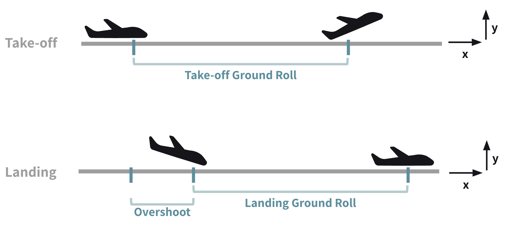
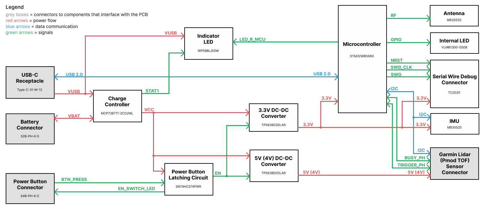
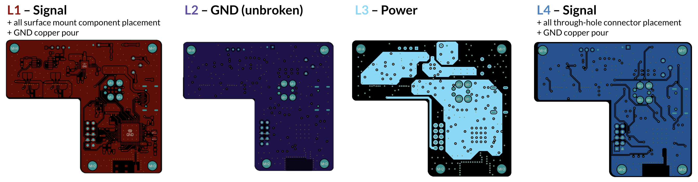
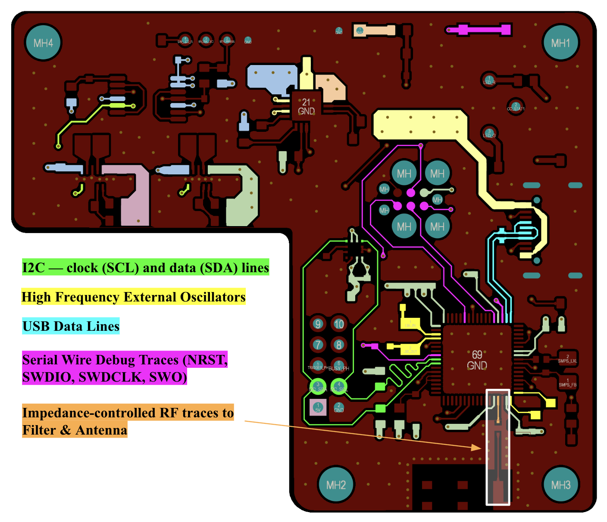
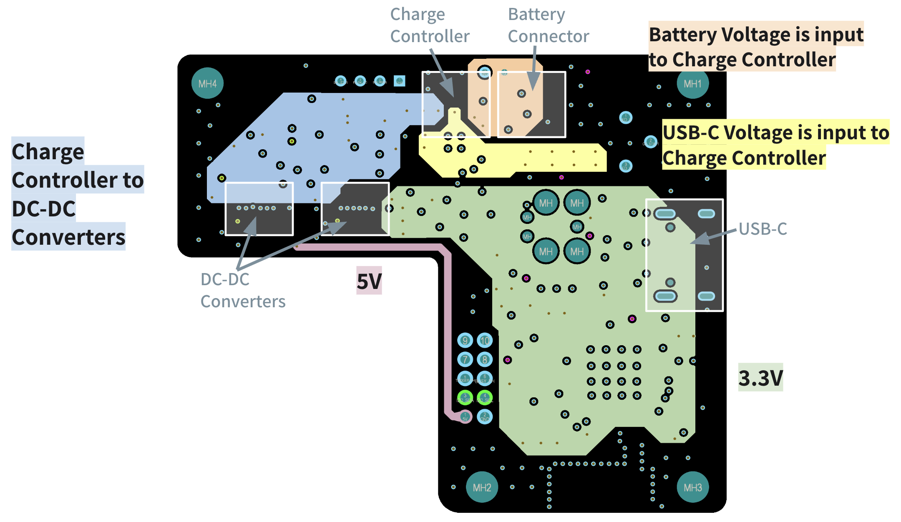
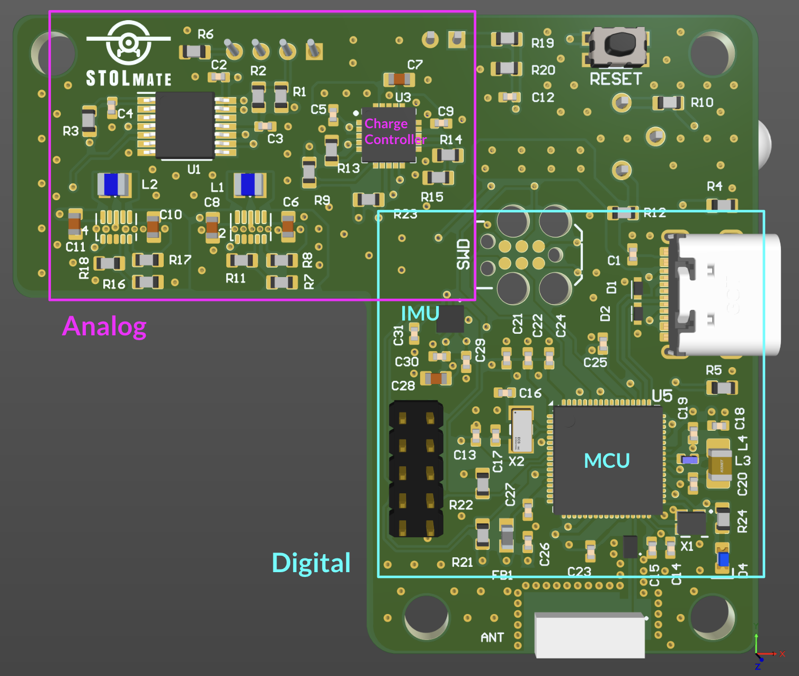
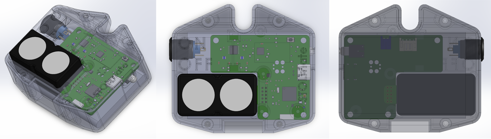
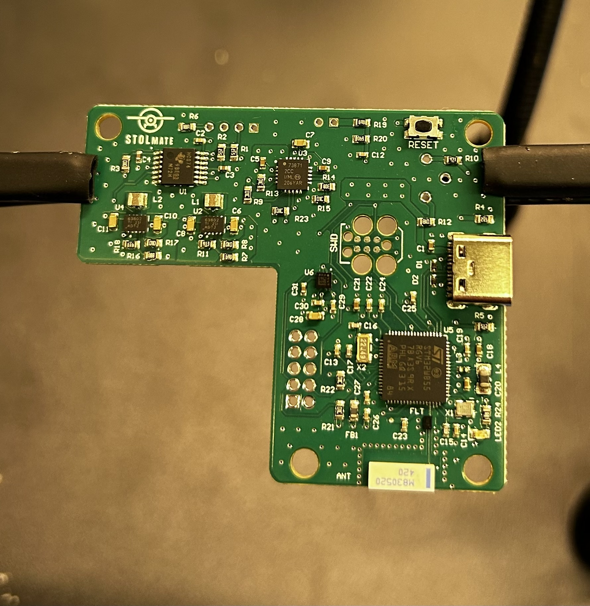
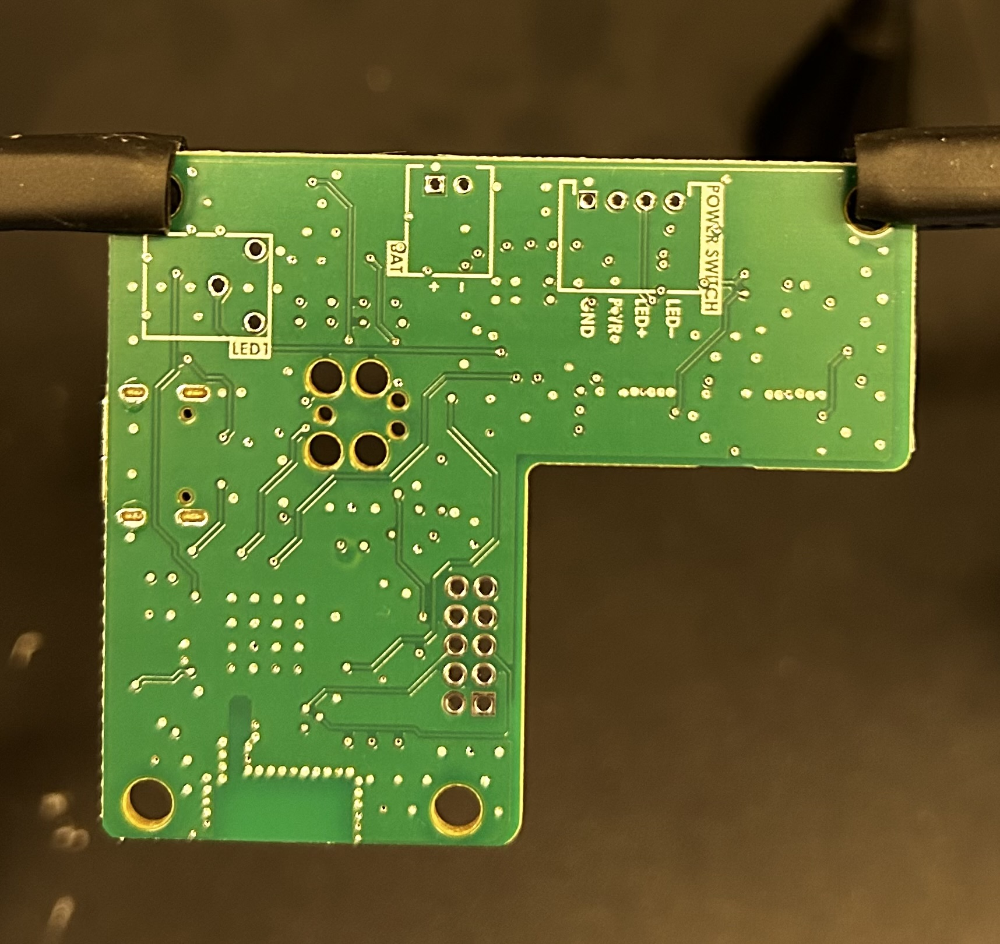

PCBA for Airplane Takeoff & Landing Metrics - STOLmate
I designed a custom microcontroller-based PCB – integrating a TOF sensor interface, wireless data transmission, and battery charging – based on the previous generation development board-based prototype. I developed embedded firmware, then programmed and validated performance of the PCB.
This project was part of my work for my engineering capstone project. I focused on the hardware design aspects of the project, and my contributions to the project involved:
- PCB design (solely responsible)
- firmware development
- sensor & accelerometer testing to inform future hardware development
Background
Short Take-Off and Landing performance measures an aircraft’s ability to minimize the runway distance required for takeoff and landing. This diagram illustrates the 3 STOL measurements reported to the user:
- takeoff ground roll
- landing ground roll
- overshoot

STOLmate is the first commercially-available device to enable pilots to train for STOL competitions by determining their takeoff and landing performance independently, and STOLmate 2.0 (what I worked on) enhances the features of the pre-existing model.
PCB Functional Requirements
- Garmin Lidar compatibility
- Incorporates Accelerometer
- Bluetooth functionality
- LED indicators for power & charging
- Battery-powered
- Tracks battery charge %
- USB-C charging
- Bluetooth data transmission functionality
- Fits within constraints of existing casing design
- Minimizes part count
Other Considerations
- Mechanical Constraints
- DFM / DFA
- Regulatory Compliance
- Cost
Block Diagram of PCB Architecture
The diagram below shows the functional blocks of the design.

The PCB is a 4-layer impedance-controlled design

Signal Layer

Power Plane

PCB Layout & Routing Considerations
- EMI
- Noise
- Crosstalk
- Separation of analog & digital signals
- High-frequency signals
- High-speed signal routing

Mechanical constraints
Board shape & connector placement determined by mechanical constraints

PCBA recieved from the manufacturer (JLCPCB)

